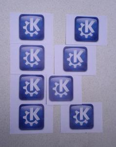

Saturday, was the busiest day: we had a KDE booth and ran two conference tracks: users and contributors.
Being co-hosted with the Ubuntu Party brought in a different population from previous KDE Release Parties. We had nice conversations on the KDE booth with Ubuntu users who heard about KDE but did not really know what it looked like or even what it really was. We did our best to sell our beautiful products. The Plasma Active powered Wetab tablet made a very good impression. It is interesting how people had a much easier time understanding the concept of activities on the tablet than on traditional desktops.
Unfortunately I didn't take any picture of the booth except for this one, our DIY KDE logo. Yes, it could have used an extra row at the bottom, but we were running out of "K"!
The conference tracks were quite packed as well. I gave a presentation on QML development, which went OK I think. My slides should be online soon. I wanted to attend the MyPaint presentation but it was unfortunately scheduled at the same time as mine. Will look at the video.
SundaySunday was dedicated to workshops. It was a lot less crowded: the workshops mostly attracted people who were already familiar with free software. I attended Zanshin workshop. One of my many side-projects is a todo list system so I have to keep an eye on the competition :) Since I am a nice guy, I put together Ubuntu 11.10 packages for Zanshin 2.0 in my PPA.
After a nice pizza-powered lunch, I spent some time chatting with various people before leaving to Toulouse airport. The event was great, I hope there will be another one next year!
{kind=link}